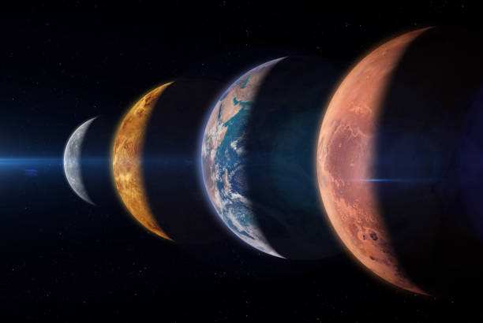
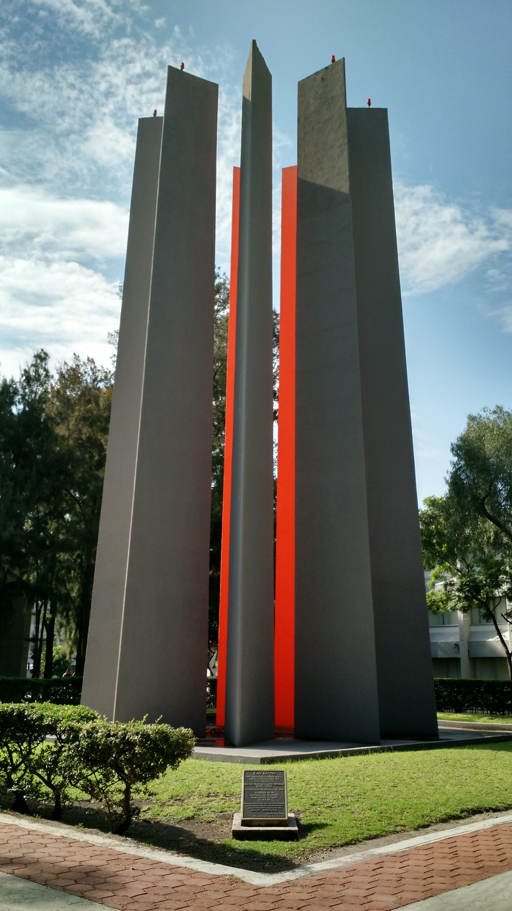

Planetas Rocosos
Mercurio, Venus, la Tierra y Marte: superficies sólidas, cráteres, volcanes y atmósferas interiores.
Ver galería →CIENCIA ASTRONOMÍA PLANETAS
En Museo Vórtice exploramos la astronomía y la ciencia planetaria mediante salas temáticas, maquetas a escala, observaciones guiadas y galerías visuales diseñadas para estudiantes, familias y curiosos del espacio.
Un espacio dedicado a comprender cómo funcionan los planetas, sus atmósferas y sus órbitas.
Nuestro objetivo es traducir los datos y fotografías del sistema solar en experiencias claras, visuales y accesibles. Comparamos tamaños, composiciones y trayectorias para entender por qué cada mundo es distinto.
Conoce cada exposición y entra directamente a su galería.

Mercurio, Venus, la Tierra y Marte: superficies sólidas, cráteres, volcanes y atmósferas interiores.
Ver galería →
Júpiter, Saturno, Urano y Neptuno: anillos, bandas de nubes, tormentas y mundos exteriores.
Ver galería →
Satélites naturales, mareas gravitatorias, resonancias y mundos helados en órbita.
Ver galería →Consulta nuestros horarios de apertura, tarifas vigentes y cómo llegar.
| Día | Horario |
|---|---|
| Lunes | Cerrado |
| Martes a Viernes | 10:00 a.m. – 6:00 p.m. |
| Sábado y Domingo | 10:00 a.m. – 8:00 p.m. |

Dirección: Av. Universidad Nacional S/N, Bosques de Aragon, 57171 Cdad. Nezahualcóyotl, Méx. , CDMX
Referencia: Por Av. Universidad Nacional, a la altura de la FES Aragón, Bosques de Aragón.
Abrir en Google Maps